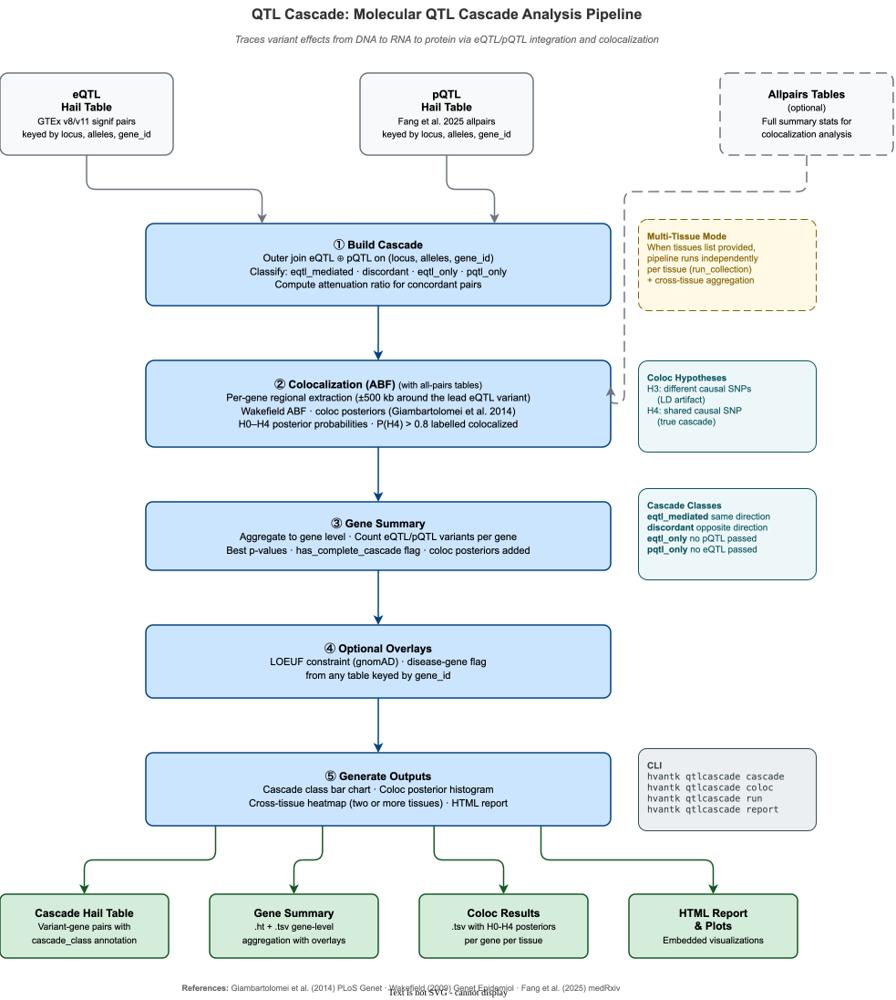

QTL cascade¶
hvantk qtlcascade asks whether a variant that changes a gene's mRNA level (an eQTL)
also changes the level of its protein (a pQTL), in the same direction, and whether the
two signals share one causal variant. It joins eQTL and pQTL summary statistics by
variant and gene, classifies each variant-gene pair, colocalises the two signals gene by
gene with approximate Bayes factors (ABF), and summarises the evidence per gene,
optionally with gnomAD constraint and a disease-gene list. A separate command,
gwas-coloc, colocalises one GWAS locus with cis-eQTLs to rank candidate effector genes
and checks the top gene with SuSiE fine-mapping.
For a run on one tissue from raw files to report, see the walkthrough.

Figure 1. The eQTL × pQTL pipeline run by hvantk qtlcascade run. gwas-coloc
is a separate command.
Commands¶
| Command | What it does | Needs |
|---|---|---|
run |
Full pipeline: cascade join, colocalisation (optional), gene summary, plots, HTML report; one or several tissues | Hail |
cascade |
Join and classify only; writes the cascade table | Hail |
coloc |
ABF colocalisation for a list of genes; writes a TSV | Hail |
report |
Rebuilds the HTML report from existing TSVs and PNGs | No Hail |
gwas-coloc |
Colocalises a FinnGen GWAS locus with eQTL Catalogue cis-eQTLs, then confirms with SuSiE | Network access, no Hail |
There is no gene-summary command: run writes the summary, or call
build_cascade_gene_summary from Python.
Inputs¶
eQTL and pQTL tables¶
The cascade reads two Hail Tables keyed by (locus, alleles, gene_id) with the fields
beta, se and p_value, plus tissue when you filter by tissue. Two plugins build
them with hvantk reprocess (Building datasets;
where to get the files: Data sources):
| Dataset | Raw files | Plugin arguments that matter here |
|---|---|---|
gtex-eqtl:eqtls |
GTEx v11 parquet (source=gtex_v11, the default) or v8 TSV (source=gtex_v8) |
tissue=<name>; p_threshold, default 5e-8, 0 keeps every pair |
pqtl:metrics |
Fang et al. (2025) cis-pQTL all-pairs files, <Tissue>.allpairs_nobsGE72.txt.gz |
tissue=<name>; hgnc_ht=<hgnc.ht> (required); p_threshold, default none, so every pair is kept |
Both datasets are bring-your-own: put the files in --raw-dir and reprocess skips the
download stage. The walkthrough shows the
build commands.
For the join to work:
- Gene IDs: both sides need unversioned Ensembl IDs. The eQTL builder strips the
version. The pQTL builder maps the Fang gene symbols to Ensembl IDs through an
hgnc:lookuptable given as--plugin-arg hgnc_ht=...; a symbol it cannot map keeps the symbol asgene_idand never joins (the build log counts them). - Alleles: both builders read
allelesas[ref, alt]from GTEx-style variant IDs (chr1_1000050_C_T_b38), and both effect sizes are per ALT allele, so an exact(locus, alleles)match keeps effect directions comparable. Nothing flips alleles or strands: a variant coded the other way round in one table does not join. - Genome build: both tables must be GRCh38. The
eqtlgensource ofgtex-eqtl:eqtlsis GRCh37 and has nobetaorse, so it cannot be used here. - Tissue names: the tissue filter is an exact string match on both tables, and the
builders take the tissue from the raw file name before the first dot. GTEx names
sub-tissues (
Heart_Left_Ventricle,Colon_Transverse, ...) while Fang usesColon,Heart,Liver,LungandThyroid; onlyLiver,LungandThyroidmatch as they are. For the others, build one table per tissue and run without a tissue filter, or give the GTEx file (or a symlink to it) the Fang name.
All-pairs tables for colocalisation¶
Colocalisation needs every tested variant-gene pair in the window, not only the
significant ones. Build the eQTL table with --plugin-arg p_threshold=0 from GTEx
all-pairs files (GTEx distributes them separately from the significant pairs) and the
pQTL table without p_threshold (the Fang files already hold every pair). Because
cascade applies --eqtl-p and --pqtl-p itself, the same two tables can also be the
cascade inputs. A significant-pairs table does not fail, but coloc then sees only the
variants that passed the threshold, which hides evidence for distinct causal variants
(H3) and overstates H4.
Overlays¶
--constraint-ht: a table keyed bygene_id(Ensembl) with anoe_lof_upper(LOEUF) field, such as the defaultgnomad-metrics:metricsbuild (gnomAD v2.1.1, by gene). The v4.0 build is keyed by transcript and has nooe_lof_upper, so it does not work here.--disease-genes-ht: any table keyed by onegene_idfield of Ensembl IDs; a gene getsis_disease_gene = truewhen its ID is a key of that table. The ClinGen and GenCC tables that hvantk builds have compound keys that start withhgnc_idandmondo_id, and stop the run with a key type mismatch. Re-key one through the HGNC table first (ClinGen shown):
import hail as hl
clingen = hl.read_table("data/clingen.ht") # keyed by (hgnc_id, mondo_id); hgnc_id like "1100"
hgnc = hl.read_table("data/hgnc.ht") # keyed by hgnc_id like "HGNC:1100"
genes = clingen.key_by()
genes = genes.select(gene_id=hgnc["HGNC:" + genes.hgnc_id].ensembl_gene_id)
genes = genes.filter(hl.is_defined(genes.gene_id)).key_by("gene_id").distinct()
genes.write("data/clingen_genes.ht")
GWAS statistics¶
gwas-coloc does not read a local GWAS table: it streams FinnGen R10 summary statistics
for one endpoint (below). The
gwas-catalog:associations dataset lists published lead associations without standard
errors, so it cannot feed coloc; use it to pick a lead variant.
Quick start¶
With an all-pairs eQTL table and a pQTL table for liver, built as in the walkthrough:
hvantk qtlcascade run \
--eqtl-ht data/eqtl_liver_allpairs.ht \
--pqtl-ht data/pqtl_liver.ht \
--eqtl-allpairs data/eqtl_liver_allpairs.ht \
--pqtl-allpairs data/pqtl_liver.ht \
--constraint-ht data/gnomad_metrics.ht \
--tissues Liver \
-o results/qtl_liver
This keeps the pairs with p ≤ 5e-8 on each side, classifies them, colocalises every gene that has an eQTL and a pQTL at the same variant, and writes:
results/qtl_liver/
├── per_tissue/
│ └── Liver/ # "all" when --tissues is not given
│ ├── cascade.ht/ # variant-gene pairs with their class
│ ├── gene_summary.ht/ # one row per gene
│ ├── gene_summary.tsv # the same table as TSV
│ └── coloc_results.tsv # H0-H4 per gene, when coloc ran
├── plots/
│ ├── Liver_cascade_classes.png
│ ├── Liver_coloc_posteriors.png
│ └── cross_tissue_heatmap.png # with two or more tissues
└── qtlcascade_report.html
Tissue names keep their case in paths; characters other than letters, digits, _ and
- become _.
Cascade join (cascade)¶
- If
--tissueis given, keep only the rows of that tissue in each table (a table without atissuefield is not filtered). - Keep eQTL rows with
p_value <= --eqtl-pand pQTL rows withp_value <= --pqtl-p. A threshold of0keeps every row. - Outer-join the two tables on
(locus, alleles, gene_id). -
Classify each pair:
cascade_classRule eqtl_mediatedeQTL and pQTL, eqtl_beta * pqtl_beta > 0(same direction)discordanteQTL and pQTL, eqtl_beta * pqtl_beta <= 0eqtl_onlyeQTL, and no pQTL row for this variant and gene after filtering pqtl_onlypQTL, and no eQTL row for this variant and gene after filtering -
For
eqtl_mediatedpairs, computeattenuation_ratio = 1 - |pqtl_beta| / |eqtl_beta|(missing for the other classes): 0 when both effects have the same size, towards 1 when the protein effect is smaller, negative when it is larger.
Joining on gene_id as well as the variant stops an eQTL for one gene and a pQTL for
another gene at the same variant from being paired. It does not show that the eQTL and
the pQTL share a causal variant; coloc tests that. Without a tissue filter, input
tables that hold several tissues pair rows across tissues (a warning is logged).
| Option | Default | Description |
|---|---|---|
--eqtl-ht |
required | eQTL Hail Table |
--pqtl-ht |
required | pQTL Hail Table |
-o, --output |
required | Output cascade table (.ht) |
--tissue |
none | Keep only this tissue in both tables |
--eqtl-p |
5e-8 |
eQTL p-value threshold (0 keeps every row) |
--pqtl-p |
5e-8 |
pQTL p-value threshold (0 keeps every row) |
--overwrite |
off | Replace an existing output table |
hvantk qtlcascade cascade \
--eqtl-ht data/eqtl_liver_allpairs.ht \
--pqtl-ht data/pqtl_liver.ht \
--tissue Liver \
-o results/cascade_liver.ht
The cascade table is keyed by (locus, alleles, gene_id):
| Field | Type | Description |
|---|---|---|
eqtl_beta, eqtl_se, eqtl_pvalue |
float64 | eQTL statistics (missing for pqtl_only) |
pqtl_beta, pqtl_se, pqtl_pvalue |
float64 | pQTL statistics (missing for eqtl_only) |
cascade_class |
str | Class, as above |
attenuation_ratio |
float64 | eqtl_mediated pairs only |
tissue |
str | The --tissue value; missing without it |
Colocalisation (coloc)¶
For each requested gene, coloc tests whether the eQTL and the pQTL share one causal
variant:
- Read both all-pairs tables, keep the requested genes (and
--tissue), and inner-join them on(locus, alleles, gene_id): only variants present in both tables are used. - Take the lead eQTL variant, the shared variant with the smallest eQTL p-value, and
keep the shared variants within
--window-kbof it (default ±500 kb). - Skip the gene, leaving it out of the output, if fewer than 2 variants remain.
- Compute a log ABF per variant and trait from
betaandse(Wakefield 2009), then the posterior of each hypothesis (Giambartolomei et al. 2014, the algebra of the R coloc package'scoloc.abf). Sums run over the variants in the window; the code works in log space.
per variant: z = beta / se, r = W / (W + se^2), log ABF = 0.5 * (log(1 - r) + r * z^2)
H0 no association L0 = 1
H1 eQTL only L1 = p1 * sum(ABF_eqtl)
H2 pQTL only L2 = p2 * sum(ABF_pqtl)
H3 both, distinct causal variants L3 = p1 * p2 * (sum(ABF_eqtl) * sum(ABF_pqtl) - sum(ABF_eqtl * ABF_pqtl))
H4 both, one shared causal variant L4 = p12 * sum(ABF_eqtl * ABF_pqtl)
PP.Hk = Lk / (L0 + L1 + L2 + L3 + L4)
| Parameter | Default | Meaning |
|---|---|---|
p1 |
1e-4 |
Prior that a variant is causal for the eQTL only |
p2 |
1e-4 |
Prior that a variant is causal for the pQTL only |
p12 |
1e-5 |
Prior that a variant is causal for both |
W |
0.04 |
Prior variance of the true effect (prior SD 0.2), the same for both traits |
| Window | ±500 kb | Around the lead eQTL variant |
| Colocalised | H4 > 0.8 | Label used by the gene summary, the run printout, the report and the plots |
The CLI sets only the window and the tissue. Change the priors and W through
CascadeConfig (coloc_p1, coloc_p2, coloc_p12, coloc_W) or
run_coloc_per_gene. The 0.8 cut-off is fixed and only labels results: every tested
gene is written.
Compared with the R coloc package, this implementation:
- uses
betaandseonly: there is no p-value and MAF route, no sample size, nosdYestimate and no case fraction. R coloc's default prior for a quantitative trait with unit SD is W = 0.0225 (SD 0.15), whichgwas-colocuses for its eQTL side; the cascade uses 0.04 for both traits. - assumes at most one causal variant per trait in the window. With several independent
signals, a shared one can be missed or reported as H3; only
gwas-colocadds SuSiE fine-mapping. - needs no allele alignment for the posteriors, which depend on z² only; variants coded differently in the two tables are not joined and drop out.
H4 ignores the direction of effect, so a discordant gene can colocalise. Coloc collects
every shared variant of every requested gene to the driver before applying the window,
so memory follows the size of the all-pairs tables, not --window-kb.
run tests every gene with at least one eqtl_mediated or discordant pair. For the
CLI, list the genes in a text file, one gene_id per line.
| Option | Default | Description |
|---|---|---|
--eqtl-allpairs |
required | All-pairs eQTL table |
--pqtl-allpairs |
required | All-pairs pQTL table |
--cascade-genes |
required | Text file, one gene_id per line |
--tissue |
none | Keep only this tissue; also the output tissue value (unknown without it) |
--window-kb |
500 |
Half-width of the window around the lead eQTL variant, in kb |
-o, --output |
required | Output TSV |
The TSV has one row per tested gene: gene_id, tissue, H0 to H4, and
n_variants (shared variants in the window). It is written even when no gene could be
tested (header only).
Gene summary¶
run aggregates the cascade table per gene into gene_summary.ht and
gene_summary.tsv:
| Column | Description |
|---|---|
gene_id |
Ensembl gene ID (key) |
n_eqtl_variants, n_pqtl_variants |
Variants with an eQTL, and with a pQTL, for the gene |
n_concordant, n_discordant |
eqtl_mediated and discordant pairs |
best_eqtl_pvalue, best_pqtl_pvalue |
Smallest p-value on each side |
tissues |
Tissue labels of the gene's pairs |
has_complete_cascade |
n_concordant > 0 |
oe_lof_upper |
LOEUF, with --constraint-ht |
is_disease_gene |
With --disease-genes-ht |
coloc_max_h4 |
Highest H4 among the gene's coloc rows, when coloc ran |
coloc_n_tissues |
Number of those rows with H4 > 0.8 |
run passes one tissue's coloc results at a time, so there coloc_max_h4 is that
tissue's H4 and coloc_n_tissues is 0 or 1; pass results for several tissues to
build_cascade_gene_summary to count across tissues. Genes that coloc did not test have
missing coloc columns.
Full pipeline (run)¶
run executes the stages in order: build the cascade, colocalise (only when both
all-pairs tables are given), build the gene summary, then write the plots and the
report.
| Option | Default | Description |
|---|---|---|
--eqtl-ht, --pqtl-ht |
required | Cascade inputs |
--eqtl-allpairs, --pqtl-allpairs |
none | All-pairs tables: give both to run coloc, or neither |
--constraint-ht |
none | LOEUF overlay |
--disease-genes-ht |
none | Disease-gene overlay |
--tissues |
none | Comma-separated tissues, one pass each |
-o, --output-dir |
required | Output directory |
--eqtl-p, --pqtl-p |
5e-8 |
Thresholds, as in cascade |
--window-kb |
500 |
Coloc window, as in coloc |
--no-plots |
off | Skip the PNGs |
--no-report |
off | Skip the HTML report |
--overwrite |
off | Replace existing Hail tables |
--dry-run |
off | Print the plan and exit |
- Without
--tissues,runmakes one pass with no tissue filter, writes underper_tissue/all/, and prints the number of genes in the summary and the class counts. - With
--tissues A,B, it runs the tissues one at a time in alphabetical order and prints<tissue>: <n> genes, <m> colocalisedfor each, wheremcounts H4 > 0.8. A tissue that fails is skipped (the command fails only if all do). It drawscross_tissue_heatmap.png(class counts per tissue) when at least two tissues finish, and writes one combined report. --dry-runprints the tissues, the inputs, whether coloc will run and the stages, without reading any table or writing anything to-o.- Plots need matplotlib (
pip install 'hvantk[viz]'); without it,runlogs a warning for each plot and carries on. --overwritereplaces the Hail tables. A rerun in which no gene has both an eQTL and a pQTL still writes an empty (header-only)coloc_results.tsv, replacing any file from an earlier run at that path.
Report (report)¶
report rebuilds the self-contained HTML report from files that run wrote: an
overview, the top 50 genes by n_concordant, a coloc summary (genes tested, number and
share with H4 > 0.8, median H4), every PNG in --plots-dir, and a fixed methods
paragraph. It reads no Hail tables, so its overview has no class counts; the report that
run writes has them. The footer carries a timestamp, so compare the TSVs, not report
files, when checking a rerun.
| Option | Default | Description |
|---|---|---|
--gene-summary |
none | gene_summary.tsv |
--coloc-results |
none | coloc_results.tsv |
--plots-dir |
none | Directory whose *.png files are embedded |
-o, --output |
required | Output HTML file |
--title |
QTL Cascade Analysis Report |
Page title |
hvantk qtlcascade report \
--gene-summary results/qtl_liver/per_tissue/Liver/gene_summary.tsv \
--coloc-results results/qtl_liver/per_tissue/Liver/coloc_results.tsv \
--plots-dir results/qtl_liver/plots \
-o results/liver_report.html
GWAS colocalisation (gwas-coloc)¶
gwas-coloc asks which cis gene at a GWAS locus is the likely effector. It colocalises
the GWAS signal with the cis-eQTL of every gene in a window, ranks the genes by PP4, and
confirms the top gene (or --gene) with SuSiE fine-mapping. It is independent of the
eQTL × pQTL cascade and does not use Hail.
What it downloads¶
Every run needs network access:
- FinnGen R10 summary statistics for
--endpointover the window, by remote tabix from the public FinnGen bucket onstorage.googleapis.com. - eQTL Catalogue all-variant statistics for
--eqtl(a dataset ID such asQTD000251, in study--eqtl-study, defaultQTS000015, GTEx), by remote tabix fromftp.ebi.ac.uk.--eqtlalso accepts a URL, or a local bgzipped, tabix-indexed file in the same column layout. - For fine-mapping, the 1000 Genomes high-coverage GRCh38 phased panel from
ftp.1000genomes.ebi.ac.uk. The sample list and the chromosome's tabix index are downloaded once into the LD cache (--ld-cache-dir, else$HVANTK_LD_CACHE, else~/.cache/hvantk/1kg); the genotypes of the window are streamed on every run.--ld-vcfreplaces the panel with a local VCF (all its samples are used); the GWAS and eQTL statistics are still streamed.
pysam saves a copy of each remote tabix index (.tbi) in the current directory, so run
gwas-coloc from a scratch directory. Everything it needs (pysam, NumPy, requests) is in
the base install.
Method¶
- Window:
--lead±--window-kb(default 500 kb) on--chrom(GRCh38, nochrprefix). - Match GWAS and eQTL variants by position and allele pair, in either order. No effect flip is needed, because the ABF uses z².
- ABF screen: for each gene with at least 20 matched variants, compute PP3 and PP4 with
the
colocformulas but one prior variance per trait: W1 = 0.04 for the GWAS (case-control log odds ratio, prior SD 0.2) and W2 = 0.0225 for the eQTL (prior SD 0.15 on a unit-variance trait), with p1 = p2 = 1e-4 and p12 = 1e-5. Genes are ranked by PP4. - Target gene:
--geneif given (the verdict then uses that gene's PP4, wherever it ranks), otherwise the top-ranked gene. - Fine-mapping (on by default): keep the variants present in the GWAS, in the target
gene's eQTL and in the LD panel as biallelic SNPs, orient them to the GWAS ALT allele,
and compute LD as the correlation of ALT dosages among unrelated founders of
--superpop(EUR,AFR,EAS,SASorAMR). SuSiE-RSS (up to 10 effects, 95% credible sets, minimum |r| of 0.5 within a set) fine-maps each trait from z = beta / se and its sample size (--gwas-n,--eqtl-n). coloc.susie then takes the highest PP4 over all pairs of GWAS and eQTL credible sets (p1 = p2 = 1e-4, p12 = 5e-6), or 0 when either trait has no credible set. Both are NumPy ports of susieR and the coloc package; R is not needed. -
Verdict, with one cut-off of 0.5 for both the ABF PP4 and the coloc.susie PP4:
Verdict When CONFIRMEDABF PP4 ≥ 0.5 and coloc.susie PP4 ≥ 0.5 REFUTEDABF PP4 ≥ 0.5 but coloc.susie PP4 < 0.5: a trait has no credible set (a single-variant-ABF artifact), or the credible sets point to distinct causal variants SUGGESTIVEABF PP4 ≥ 0.5, and fine-mapping was not run ( --no-fine-map) or the LD reference could not be builtINCONCLUSIVEFine-mapping ran but gave no PP4 (fewer than 2 usable variants, or a SuSiE error) NO COLOCNo gene tested, --genenot among the tested genes, or its ABF PP4 < 0.5
The printed verdict adds the reason in parentheses. The cut-off is 0.5, not the 0.8 used
for the cascade, because coloc.susie is more conservative than single-variant ABF; change
it with GwasColocConfig(pp4_threshold=...) from Python. A network failure fetching the
LD reference leaves no LD reference: an ABF hit is then reported as SUGGESTIVE and the
command does not fail. --superpop is restricted to the five 1000 Genomes
super-populations, so a typo there fails at once instead of silently falling back this
way. LD comes from a reference panel, not from the GWAS or eQTL samples; for weak eQTLs
the credible sets can then be unreliable, the documented limitation of SuSiE-RSS.
Options and outputs¶
| Option | Default | Description |
|---|---|---|
--endpoint |
required | FinnGen R10 endpoint code, such as I9_AF |
--chrom |
required | Chromosome, GRCh38, without chr |
--lead |
required | Lead variant position (GRCh38) |
--eqtl |
required | eQTL Catalogue dataset ID, URL or local tabix file |
--eqtl-study |
QTS000015 |
eQTL Catalogue study ID |
--window-kb |
500 |
Half-width of the window around the lead, in kb |
--gene |
top ABF gene | Ensembl gene ID to confirm |
--fine-map / --no-fine-map |
--fine-map |
Run the SuSiE confirmation |
--gwas-n, --eqtl-n |
none | Sample sizes; required unless --no-fine-map |
--superpop |
EUR |
1000 Genomes super-population for LD: EUR, AFR, EAS, SAS or AMR |
--ld-cache-dir |
$HVANTK_LD_CACHE, else ~/.cache/hvantk/1kg |
Cache for the panel's sample list and indexes |
--ld-vcf |
none | Local VCF to use as the LD reference |
-o, --output-dir |
required | Output directory |
Without --gwas-n and --eqtl-n, the default --fine-map stops before any download
with fine-mapping requires gwas_N and eqtl_N (or pass --no-fine-map).
hvantk qtlcascade gwas-coloc \
--endpoint I9_AF --chrom 10 --lead 73600000 \
--eqtl QTD000251 \
--gwas-n 261395 --eqtl-n 372 \
-o results/af_10q22
It writes two files to --output-dir:
coloc_<endpoint>_<chrom>_<lead>.tsv: one row per tested gene, sorted by PP4, withgene_id,gene(the ID again unless symbols are passed from Python),n_snp,eqtl_min_p,PP3andPP4.report_<endpoint>_<chrom>_<lead>.json: region and genome build, sources and sample sizes,coloc_params,results(genes tested, top gene and its PP4, gene of interest and its PP4),fine_map(credible sets per trait,coloc_susie_PP4, LD panel, note;nullwith--no-fine-map),verdict, run date and provenance notes.
The walkthrough runs a confirmed and a refuted locus.
Interpreting results¶
- Classes depend on the thresholds and on what each study measured.
eqtl_onlymeans that no pQTL for that variant and gene passed--pqtl-p: the protein effect may be small, the variant untested, or the protein not measured in the pQTL study. eqtl_mediatedrecords a same-direction effect of one variant on both layers. The class names follow Fang et al. (2025); none of them is a mediation test.- High H4 means that the eQTL and the pQTL share a causal variant in the window. High H3 means distinct causal variants, so a cascade seen at a shared variant is an LD artifact. High H1 or H2 means that only one trait has a signal in the window.
eqtl_betaandpqtl_betacome from different studies, each on its own scale; compare attenuation ratios between genes rather than reading one value on its own.- For
gwas-coloc, trustCONFIRMEDandREFUTEDover the ABF ranking: a strong GWAS signal next to a weak eQTL can give a high single-variant PP4 that fine-mapping does not support.
Python API¶
The code lives in hvantk/algorithms/qtlcascade/; the CLI is
hvantk/tools/qtl/qtlcascade_cli.py.
Pipeline¶
from hvantk.algorithms.qtlcascade import CascadeConfig, CascadePipeline
config = CascadeConfig(
eqtl_ht="data/eqtl_liver_allpairs.ht",
pqtl_ht="data/pqtl_liver.ht",
eqtl_allpairs_ht="data/eqtl_liver_allpairs.ht",
pqtl_allpairs_ht="data/pqtl_liver.ht",
constraint_ht="data/gnomad_metrics.ht",
output_dir="results/qtl_liver",
)
pipeline = CascadePipeline(config) # validates the config; creates no directories yet
result = pipeline.run(tissue="Liver")
print(result.class_counts, result.n_cascade_genes)
if result.coloc_df is not None:
print((result.coloc_df["H4"] > 0.8).sum(), "genes with H4 > 0.8")
CascadeConfig fields map to the run options, plus the coloc priors that the CLI does
not expose:
| Field | Default | CLI option |
|---|---|---|
eqtl_ht, pqtl_ht, output_dir |
required | --eqtl-ht, --pqtl-ht, -o |
eqtl_allpairs_ht, pqtl_allpairs_ht |
"" |
--eqtl-allpairs, --pqtl-allpairs |
constraint_ht, disease_genes_ht |
"" |
--constraint-ht, --disease-genes-ht |
tissues |
[] |
--tissues |
eqtl_p_threshold, pqtl_p_threshold |
5e-8 |
--eqtl-p, --pqtl-p |
coloc_window_kb |
500 |
--window-kb |
coloc_p1, coloc_p2, coloc_p12, coloc_W |
1e-4, 1e-4, 1e-5, 0.04 |
none |
generate_plots, generate_report |
True |
--no-plots, --no-report |
overwrite |
False |
--overwrite |
CascadePipeline(config) raises ValueError for an invalid configuration
(config.validate() lists the problems) but creates no directories; run() and
run_collection() create output_dir, per_tissue/ and (unless generate_plots is
False) plots/ when they actually execute, so show_plan() writes nothing.
run(tissue=None) returns a CascadeResult with tissue, cascade_ht_path,
gene_summary_ht_path, class_counts, n_cascade_genes (genes in the summary) and
coloc_df. run_collection() runs every tissue in config.tissues and returns
{tissue: CascadeResult}; show_plan() returns the --dry-run text.
Components¶
from hvantk.algorithms.qtlcascade import (
build_cascade,
build_cascade_gene_summary,
run_coloc_per_gene,
)
from hvantk.algorithms.qtlcascade.pipeline import coloc_gene_ids
from hvantk.core.utils.hail_context import init_hail
init_hail()
cascade = build_cascade(
eqtl_ht_path="data/eqtl_liver_allpairs.ht",
pqtl_ht_path="data/pqtl_liver.ht",
output_path="results/cascade.ht",
tissue="Liver",
)
coloc_df = run_coloc_per_gene(
eqtl_allpairs_ht_path="data/eqtl_liver_allpairs.ht",
pqtl_allpairs_ht_path="data/pqtl_liver.ht",
cascade_genes=coloc_gene_ids(cascade), # genes with an eqtl_mediated or discordant pair
tissue="Liver",
W=0.04,
)
genes = build_cascade_gene_summary(
cascade_ht_path="results/cascade.ht",
output_path="results/gene_summary.ht",
constraint_ht_path="data/gnomad_metrics.ht",
coloc_df=coloc_df,
)
build_cascade and build_cascade_gene_summary return the checkpointed Hail Tables.
run_coloc_per_gene returns a pandas DataFrame with the coloc TSV columns and also
takes window_kb, p1, p2 and p12.
The ABF itself runs on NumPy arrays, without Hail:
import numpy as np
from hvantk.algorithms.qtlcascade import coloc_abf
res = coloc_abf(
eqtl_beta=np.array([0.5, 0.3, -0.1]),
eqtl_se=np.array([0.1, 0.1, 0.05]),
pqtl_beta=np.array([0.4, 0.2, -0.05]),
pqtl_se=np.array([0.1, 0.1, 0.05]),
)
print(round(res["H4"], 2)) # 0.93
coloc_abf returns a dict with H0 to H4, n_variants and lead_snp_h4_idx (the
variant with the largest joint ABF); compute_log_abf(beta, se, W) returns the
per-variant log ABFs.
Plots¶
run draws the class bar chart, the H4 histogram and the cross-tissue heatmap
(plot_cascade_classes, plot_coloc_posteriors, plot_cross_tissue_heatmap). Two more
plots take a DataFrame of variant-gene pairs:
import hail as hl
from hvantk.algorithms.qtlcascade import plot_attenuation, plot_loeuf_by_cascade_class
pairs = hl.read_table("results/qtl_liver/per_tissue/Liver/cascade.ht")
genes = hl.read_table("results/qtl_liver/per_tissue/Liver/gene_summary.ht")
# oe_lof_upper is in the gene summary only when --constraint-ht was given
pairs = pairs.annotate(oe_lof_upper=genes[pairs.gene_id].oe_lof_upper)
df = (
pairs.key_by()
.select("eqtl_beta", "pqtl_beta", "cascade_class", "oe_lof_upper")
.to_pandas()
)
plot_attenuation(df, output_path="results/attenuation.png") # eQTL beta against pQTL beta
plot_loeuf_by_cascade_class(df, output_path="results/loeuf_by_class.png")
Each plot function returns a matplotlib figure, saves it when output_path is given, and
needs the viz extra.
GWAS colocalisation from Python¶
from hvantk.algorithms.qtlcascade.gwas_pipeline import (
GwasColocConfig,
run_gwas_coloc_pipeline,
)
config = GwasColocConfig(
endpoint="I9_AF",
chrom="10",
lead=73600000,
eqtl_dataset="QTD000251",
output_dir="results/af_10q22",
gene_of_interest="ENSG00000177791",
gwas_N=261395,
eqtl_N=372,
gene_symbols={"ENSG00000177791": "MYOZ1"}, # fills the `gene` column
)
report = run_gwas_coloc_pipeline(config) # the JSON report, as a dict; raises ValueError
# for an invalid config (same problems config.validate() lists) before anything runs
print(report["verdict"], report["results"]["goi_PP4_abf"])
GwasColocConfig also takes min_snps (20), W1 (0.04), W2 (0.0225), p1, p2,
p12 and pp4_threshold (0.5).
References¶
- Giambartolomei C et al. (2014). Bayesian test for colocalisation between pairs of genetic association studies using summary statistics. PLoS Genet 10:e1004383. doi:10.1371/journal.pgen.1004383
- Wakefield J (2009). Bayes factors for genome-wide association studies: comparison with P-values. Genet Epidemiol 33:79-86. doi:10.1002/gepi.20359
- Wang G et al. (2020). A simple new approach to variable selection in regression, with application to genetic fine mapping. J R Stat Soc B 82:1273-1300. doi:10.1111/rssb.12388
- Zou Y et al. (2022). Fine-mapping from summary data with the "Sum of Single Effects" model. PLoS Genet 18:e1010299. doi:10.1371/journal.pgen.1010299
- Wallace C (2021). A more accurate method for colocalisation analysis allowing for multiple causal variants. PLoS Genet 17:e1009440. doi:10.1371/journal.pgen.1009440
- Fang et al. (2025). Regulation of protein abundance in normal human tissues. medRxiv. doi:10.1101/2025.01.10.25320181
- Kurki MI et al. (2023). FinnGen provides genetic insights from a well-phenotyped isolated population. Nature 613:508-518. doi:10.1038/s41586-022-05473-8
- Kerimov N et al. (2021). A compendium of uniformly processed human gene expression and splicing quantitative trait loci. Nat Genet 53:1290-1299. doi:10.1038/s41588-021-00924-w
- Byrska-Bishop M et al. (2022). High-coverage whole-genome sequencing of the expanded 1000 Genomes Project cohort including 602 trios. Cell 185:3426-3440. doi:10.1016/j.cell.2022.08.004
See also¶
- QTL cascade walkthrough: one tissue from raw files to report, and a confirmed and a refuted GWAS locus.
- Data sources: where to get the GTEx eQTL and Fang pQTL files.
- Building datasets:
hvantk reprocess. - Workflow skills: the
qtl-cascadeskill runs these steps as cluster jobs. - Running on HPC: Hail on a Slurm cluster.